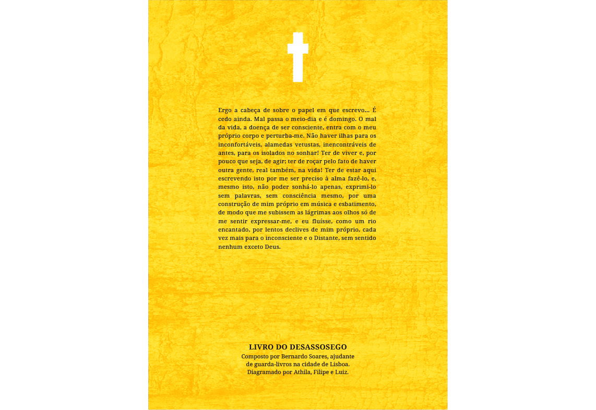

fragmento 92 // fanzine
Em sua origem, o Livro do Desassossego, obra de Fernando Pessoa em que se situa o texto retratado no projeto a seguir, não possui uma ordem específica pois seu autor nunca o terminou e nem o organizou, foi publicado somente após sua morte por pesquisadores de sua obra. Fernando Pessoa foi um sujeito solitário, não tinha muitos amigos; Chegou a namorar mas não se casou, procurava ter uma vida simples, dedicando-se à escrita. A partir desses conceitos, foi decidido interpretar a diagramação de Fragmento 92 de forma quase rústica, buscando essa proximidade ao simples e, ainda assim, contemplando o vazio e o fascínio pelo fúnebre, vide ritmo e clima do texto.
referências
a child hand's playing with cotton-reels
